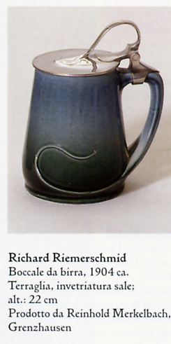

La Germania meridionale e il profumo dell'arte, "Jugendstil" e stile di vita.
"Città della gioventù": questa è la perfetta formula ideata intorno al 1900 dal poeta Stefan George per definire Monaco. Qui, artisti e letterati - trentenni o anche più giovani - diedero vita a tutto quanto di brillante, frivolo, originale ed eccitante offrivano i tempi. George aveva ragione anche quando definiva Monaco "città del popolo", poiché di tutti gli innovativi movimenti artistici sorti intorno alla fine del XIX secolo, quello di Monaco - quantomeno in senso generale - fu il più popolareggiante. Ciò dipese senza dubbio anche dal clima fondamentalmente sereno che regnava in città, dalla consuetudine con le arti e da una certa tolleranza nei confronti delle turbolenze giovanili. Quando l'atmosfera si surriscaldava, era dovuto più al temperamento bavarese che non a divergenti concezioni del mondo. Per quanto fosse pervasa da un generale spirito di rinnovamento, la capitale bavarese non smise mai, però, di affermare i valori della tradizione accanto a quelli più moderni, stupefa-centi e nuovi. Monaco fu risparmiata dagli eccessi dello sfarzo storicista guglielmino e potè, quindi, muovere senza traumi dal pulito e raffinato classicismo di Leo von Klenze (1784-1864) e Friedrich von Gàrtner (1792-1847). Certo i tempi, con la loro febbrile industrializzazione, la-sciarono il segno anche a Monaco, ma lo sviluppo fu cauto ed equilibrato, e la profonda coscienza del proprio valore evitò qualsiasi forzatura, summa summarum degli aspetti positivi, che però rischia sempre di scivolare in un certo autocompiacimento, trasformandosi così in una sorta di boomerang. L'atmosfera artistica che per un certo periodo vi si respirò, soprattutto nel campo delle arti applicate, favorì la creazione di opere brillanti, piene di vigore e di umorismo, ma finì per essere soppiantata, nel giro di qualche anno, da un nuovo Biedermeier: una questione di mentalità. I "maestri" dello Jugendstil monacense - Peter Behrens, Otto Eckmann, August Endell e Bernhard Pankok - avrebbero lasciato la città, perché mancava, nella grande borghesia delle banche e dell'industria, una committenza privata sensibile e orientata all'a-vanguardia; lo splendore artistico dell'epoca dei Witteisbach era ormai un ricordo. Per poter realizzare il sogno dell'opera d'arte totale e di un industrial design intriso di valore artistico, essi avevano bisogno di "manager artistici" come quelli di Berlino o di "potentati" illuminati quale era il granduca dell'Assia Ernst Ludwig. Il porta-voce del nuovo stile, Hermann Obrist, lamentò "il particolare sapore dell'agio sudtedesco" e una "latente apatia": "Monaco è tempestata di pietre preziose, di cui si prende tanto poca cura quanto lo gneiss dei suoi granati. Qualcosa di così lontano dal suo tempo come la nuova arte strutturale e decorativa (da non confondersi con le moderne arti applicate), la nuova comprensione psicologica dell'arte, le nuove tendenze seguite nell'insegnamento dell'arte - insomma, tutta questa appassionata serietà non poteva svilupparsi liberamente sul terreno dell'ozio tipico del Sud della Germania", rincarò Hans Rosenhagen nel 1902, nel suo storico articolo, su un tema ancor oggi di estrema attualità, intitola-to Mùnchens Niedergang als Kunststadt (II de-clino di Monaco in quanto città d'arte). L'idea stessa del declino di Monaco come città d'arte indica che, in precedenza, doveva essersi invece registrato un "boom" artistico. La versione monacense dello Jugendstil intorno al 1900 era caratterizzata non solo da un tratto nazionale e individuale di elevata qualità, bensì anche da un formato moderno e internazionale. E proprio Obrist aveva efficacemente gettato il "seme" da cui, come un fulmine a ciel sereno, sarebbe nato il Blaue Reiter. Nel 1910 Vasilij Kandinskij dipinse a Monaco il primo quadro astratto, esattamente quindici anni dopo che Hermann Obrist si era occupato di principi formali e teorie estremamente affini alla concezione non-figurativa dell'arte.
|

|